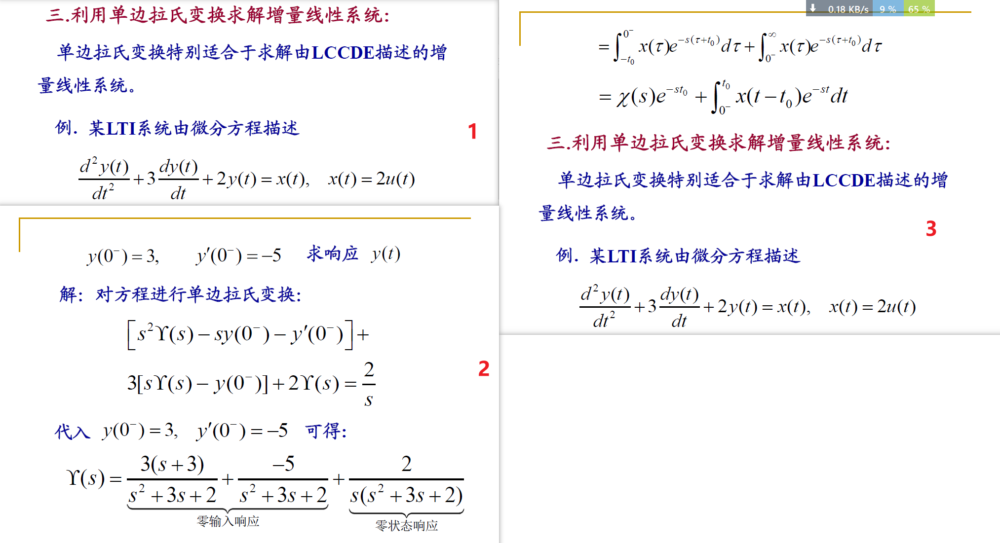

9.拉普拉斯变换
9.1 拉普拉斯变换
9.1.1 双边拉普拉斯变换
双边拉普拉斯变换：\(X(s)=\int_{-\infty}^{\infty}x(t)e^{-st}dt,s=\sigma+j\omega\)，称为\(x(t)\)的双边拉式变换
- 若\(\sigma=0\)，则为傅里叶变换
- 连续时间傅里叶变换是双边拉普拉斯变换在\(\sigma=0\)时的特例
- \(X(s)=F[x(t)e^{-\sigma t}]\)，即拉普拉斯变换是对傅里叶变换的推广
特点：
- 拉氏变换与傅里叶变换一样存在收敛问题，并非所有信号都有拉氏变换，也不是S平面上任何复数都能使拉氏变换收敛
- 拉氏变换的收敛域ROC
- 不同信号可能有相同的拉氏变换表达式，但是ROC不同
- 只有拉氏变换连同对应的ROC，才能与信号建立一一对应的关系
- 如果拉氏变换的ROC博爱阔\(j\omega\)轴，则\(X(j\omega)=X(s)|_{s=j\omega}\)
9.1.2 ROC与零极点图
拉氏变换的收敛域是各个收敛域的公共部分。ROC总是以平行于\(j\omega\)轴的直线作为边界，ROC的边界总是与\(X(s)\)的分母的根对应
- 若\(X(s)\)为有理函数\(X(s)=\frac{N(s)}{D(s)}=M\frac{\prod_{i}(s-\beta_i)}{\prod_{j}(s-\alpha_j)}\)，分子多项式的根称为零点，分母多项式的根称为极点
- 将\(X(s)\)的全部零点和极点表示在S平面上就构成了零极点图
- 零极点图及其收敛域可以表示一个\(X(s)\)，最多与真实的\(X(s)\)相差一个常数M
9.2 拉氏变换的收敛域
ROC的性质：
- ROC是S平面上平行于\(j\omega\)轴的带状区域
- 对于有理拉普拉斯变换，ROC内无极点
- 时限信号且该信号绝对可积，其ROC是整个S平面
- 右边信号的ROC是S平面内某一条平行于\(j\omega\)轴的直线的右边
- 左边信号的ROC是S平面内某一条平行于\(j\omega\)轴的直线的左边
- 双边信号的ROC如果存在，一定是S平面内平行于\(j\omega\)轴的带状区域
当\(X(s)\)为有理函数时，其ROC总是由\(X(s)\)的极点分割，且必然满足以下规律：
- 右边信号的ROC一定位于最右边极点的右边
- 左边信号的ROC一定位于最左边极点的左边
- 双边信号的ROC可以是任意两个相邻极点之间的带状区域
9.3 拉普拉斯反变换
9.3.1 拉普拉斯反变换
拉普拉斯反变换：\(x(t)=\frac{1}{2\pi j}\int_{\sigma-j\infty}^{\sigma+j\infty}X(s)e^{st}ds\)
- \(X(t)\)可分解为复振幅为\(\frac{1}{2\pi j}X(s)ds\)的复指数信号\(e^{st}\)的线性组合
9.3.2 拉普拉斯反变换的求法
对有理函数形式的\(X(s)\)求反变换一般有两种方法：部分分式展开和留数法
- 部分分式展开法：
- 将\(X(s)\)展开为部分分式
- 根据\(X(s)\)的ROC确定每一项的ROC
- 利用常用信号的反变换对和拉氏变换的性质，对每一项进行反变换
- 留数法：
- 求出\(X(s)\)的全部极点
- 求出\(X(s)e^{st}\)在ROC左边的所有极点处的留数之和，构成了\(x(t)\)的因果部分
- 求出\(X(s)e^{st}\)在ROC右边的所有极点处的留数之和，并加负号，构成了\(x(t)\)的反因果部分
9.4 由零极点图对傅里叶变换几何求值
9.4.1 单零点/单极点情况
9.4.2 一般情况

9.4.3 举例
一阶系统：

二阶系统：

全通系统：

9.4.4 傅里叶变换集合求值的意义
- 不是用来计算\(H(j\omega)\)，而是用来进行系统的特性分析，以及零极点的移动对整个系统的影响。
- 在零极点图上，可以通过几何向量的关系，判断出系统的频率响应\(H(j\omega)\)的模和相位随\(\omega\)的变化趋势，从而分析该系统的特性。
9.5 拉普拉斯变换的性质

初值定理：如果\(x(t)\)是因果信号，且在\(t=0\)不包含奇异函数，则\(x(0^+)=\lim_{s\to\infty}sX(s)\)
终值定理：如果\(x(t)\)是因果信号，且在\(t=0\)不包含奇异函数，\(X(s)\)除了在s=0可以有单阶极点外，其余极点均在s平面的左半边，则\(\lim_{t\to\infty}x(t)=\lim_{s\to0}sX(s)\)

9.6 常用拉氏变换对

9.7 用拉氏变换分析与表征LTI系统
9.7.1 系统函数
\(Y(s)=X(s)H(s)\)，其中\(H(s)\)是\(h(t)\)的拉氏变换，称为系统函数或转移函数
- 在傅里叶变换中，\(H(j\omega)\)是系统的频率响应
- 复指数函数是一切LTI系统的特征函数。以\(e^{st}\)为基底分解信号时，系统的输出响应就是\(X(s)H(s)\)
- \(H(s)\)与对应的ROC能够完全描述一个LTI系统
9.7.2 用系统函数表征LTI系统
因果性：
- 因果系统的\(h(t)\)是右边信号，其\(H(s)\)的ROC必是最右边极点的右边
- 反因果系统的\(h(t)\)是左边信号，其\(H(s)\)的ROC必是最左边极点的左边
- 只有当\(H(s)\)为有理函数时，逆命题成立，否则不成立
稳定性：
- 如果系统稳定，则\(\int_{-\infty}^{\infty}|h(t)|dt<\infty\)，必存在\(H(j\omega)\)，因此\(H(s)\)的ROC必然包括\(j\omega\)轴
- 因果稳定系统的\(H(s)\)，其全部极点必须位于S平面的左半边
9.7.3 由LCCDE描述的LTI系统的系统函数
\(\sum_{k=0}^{N}a_k\frac{d^{k}y(t)}{dt^k}=\sum_{k=0}^{M}b_k\frac{d^kx(t)}{dt^k}\)
- 做拉氏变换得：\(H(s)=\frac{Y(s)}{X(s)}=\frac{\sum_{k=0}^{M}b_ks^k}{\sum_{k=0}^{N}a_ks^k}=\frac{N(s)}{D(s)}\)，是一个有理函数
- \(H(s)\)得ROC需要由系统得相关特性确定：
- 如果LCCDE具有一组全为0的初始条件，则\(H(s)\)的ROCC必是最右边极点的右边
- 如果LCCDE描述的系统是因果的，则\(H(s)\)的ROC必是最右边极点的右边
- 如果LCCDE描述的系统是稳定的，则\(H(s)\)的ROC必包括\(j\omega\)轴
* 9.7.4 系统特性与系统函数的关系
【详见书例9.25、9.26、9.27】
9.7.5 Butterworth滤波器

9.8 系统函数的代数属性与系统的级联并联型结构
9.8.1 系统互联时的系统函数
级联：\(H(s)=H_1(s)H_2(s),ROC:包括R_1\cap R_2\)
并联：\(H(s)=H_1(s)+H_2(s),ROC:包括R_1\cap R_2\)
反馈联结：\(X_1(s)=X(s)-G(s)Y(s),Y(s)=X_1(s)H_1(s)\)，因此\(H(s)=\frac{Y(s)}{X(s)}=\frac{H_1(s)}{1+G(s)H_1(s)},ROC:包括R_1\cap R_2\)
9.8.2 LTI系统的级联和并联型结构
级联结构：

并联结构：

9.9 单边拉式变换
单边拉普拉斯变换是双边拉普拉斯变换的特例，对分析LCCDE描述的增量线性系统具有重要意义。
9.9.1 单边拉式变换
单边拉式变换：\(X(s)=\int_{0}^{\infty}x(t)e^{-st}dt\)
- 但如果\(x(t)\)是因果信号，对其做双边拉氏变换和单边拉氏变换是完全相同的
- 单边拉氏变换的ROC一定位于最右边极点的右边【因此在讨论单边拉普拉斯变换时，一般不强调ROC】
单边拉式变换的反变换：\(x(t)=\frac{1}{2\pi j}\int_{\sigma-\infty}^{\sigma+\infty}X(s)e^{st}ds\)
9.9.2 单边拉式变换的性质
9.9.3 利用单边拉式变换求解增量线性系统
